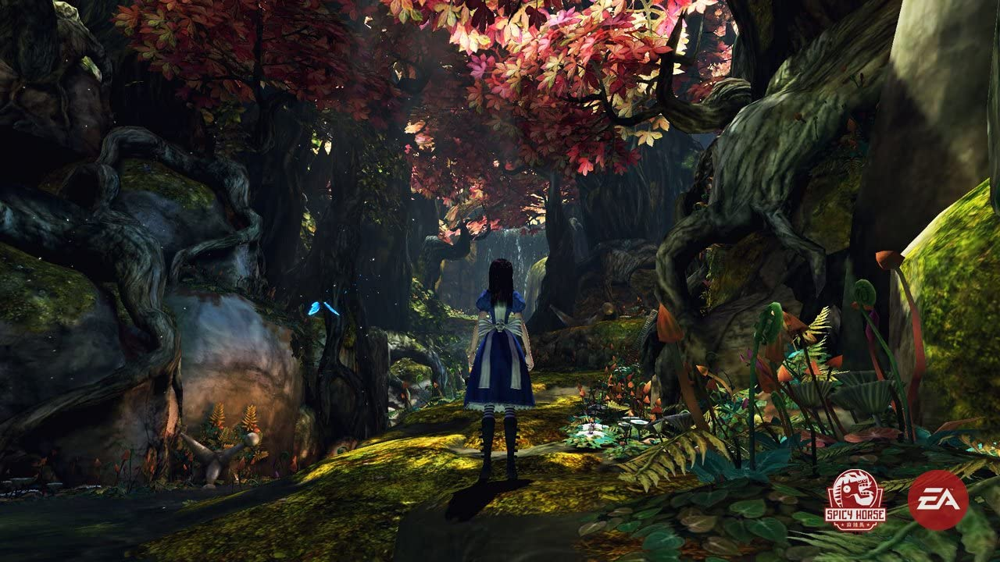
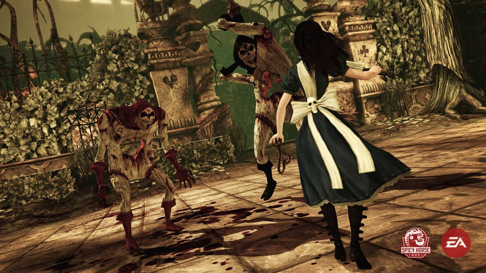
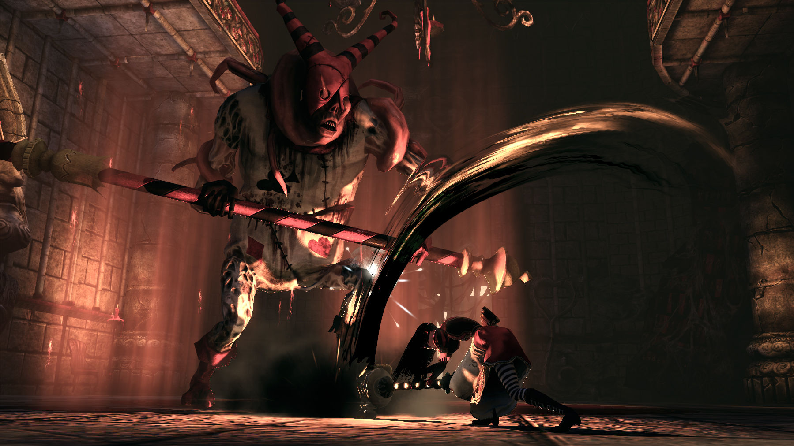
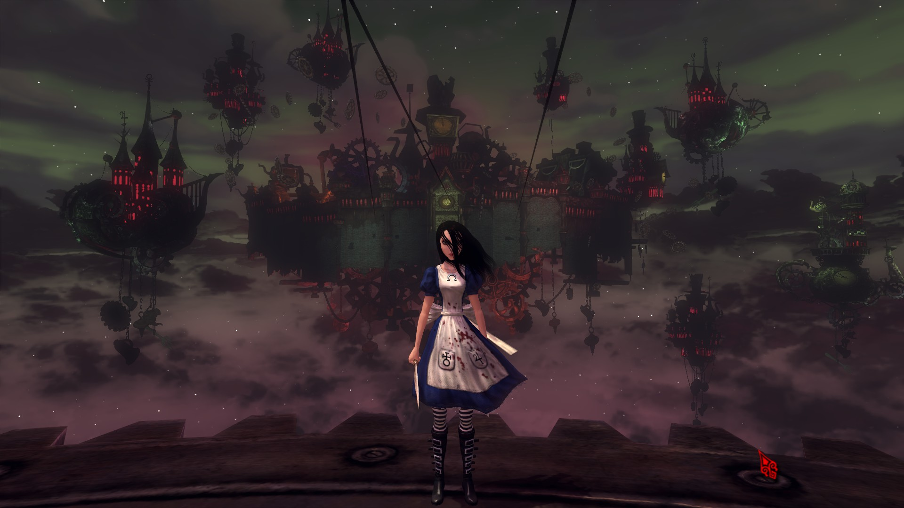
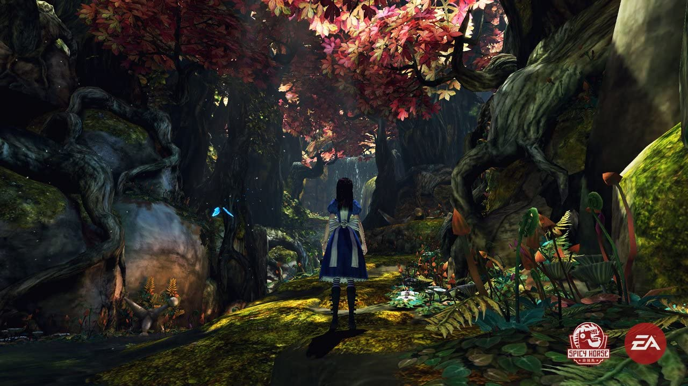
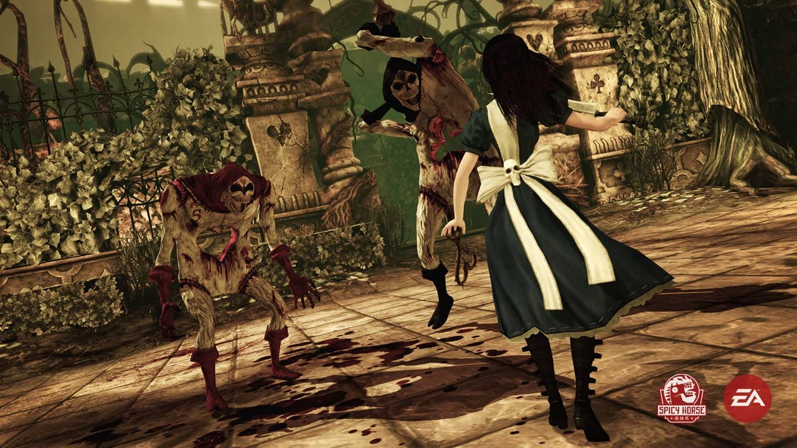
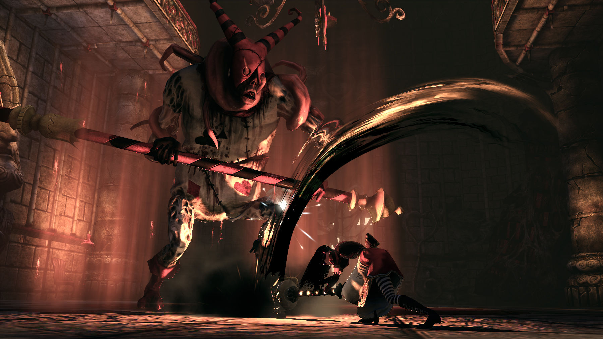
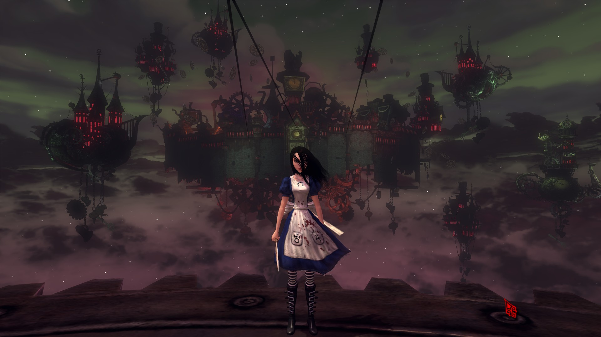

Alice: Madness Returns é um jogo de plataformas de ação e aventura em terceira pessoa, para um jogador. Visite a sombria realidade da Londres vitoriana e viaje para o belo e medonho País das Maravilhas para descobrir a raiz da loucura de Alice.